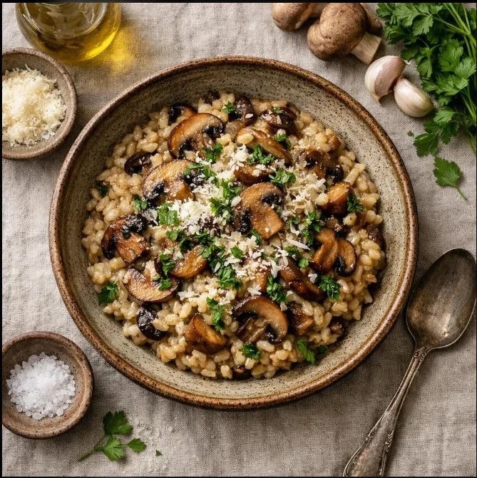

COMFORT FOOD FAVOURITE
Creamy Risotto
A warm, creamy Italian-inspired dish made with Arborio rice, savoury stock, and Parmesan cheese.
Get the Recipe
RICH & COMFORTING
Homemade Creamy Risotto
Take your time with this comforting dish. Gradually adding warm stock helps create its signature creamy texture.
Ingredients
- 200 g Arborio rice
- 1 small onion, finely chopped
- 1 tablespoon olive oil
- 25 g butter
- 750 ml warm vegetable stock
- 50 g grated Parmesan cheese
- Salt and black pepper, to taste
- Fresh parsley, optional
Instructions
- Warm the vegetable stock in a saucepan and keep it hot over low heat.
- Heat the olive oil and half the butter in a separate pan over medium-low heat.
- Add the chopped onion and cook gently until softened, without browning it.
- Add the Arborio rice and stir for 1–2 minutes until the grains are coated and lightly toasted.
- Add a ladleful of warm stock and stir. When most of the liquid has been absorbed, add another ladleful.
- Continue adding stock gradually and stirring regularly for about 18–25 minutes, until the rice is tender but still has a slight bite.
- Remove the pan from the heat. Stir in the remaining butter and Parmesan cheese.
- Season with salt and black pepper. Let the risotto rest briefly, then serve immediately with fresh parsley if desired.